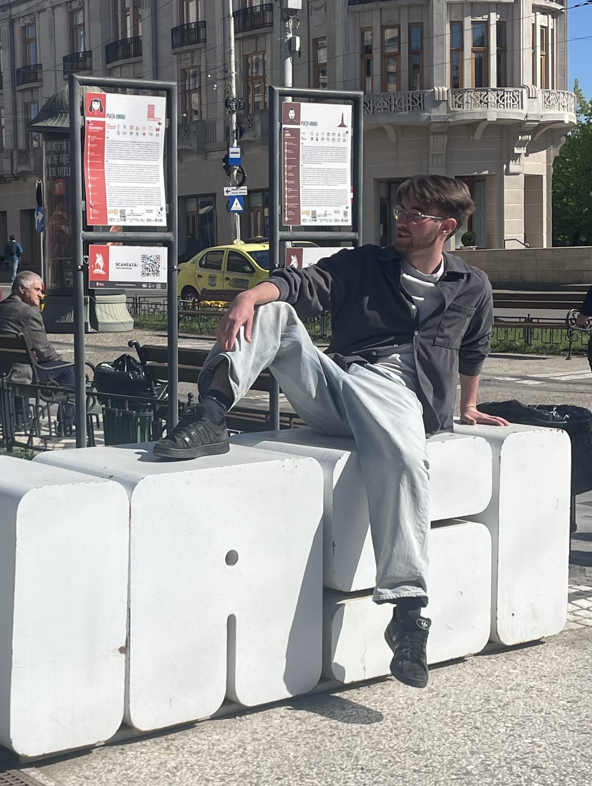

Je m'appelle Alexan RAVONNEAUX, j'ai 20 ans et je suis étudiant en 2ème année de BUT Science des Données à l'IUT de Niort, parcours VCOD. D'un naturel calme, ouvert d'esprit et résolument optimiste, j'aime être challengé et apprendre en continu.
Curieux des données, j'apprécie autant travailler en équipe — pour démultiplier l'efficacité collective — qu'être autonome quand la situation l'exige. Mon stage à l'étranger en Roumanie m'a beaucoup appris sur ces deux plans.
Un itinéraire atypique, mais formateur à chaque étape.
Grandi entre la Vendée, le Maine-et-Loire et Toulouse avant de m'installer près de Niort en 2019, j'ai appris à m'intégrer dans de nouveaux environnements, à développer mon autonomie et à m'adapter à des situations changeantes. Cette mobilité est aujourd'hui un atout que je mobilise naturellement dans mon travail.
Pratiquant de badminton et de basketball dans ma jeunesse, je me consacre aujourd'hui à la musculation avec régularité. Le sport m'a inculqué des valeurs essentielles : discipline, persévérance et dépassement de soi.
À 18 ans, après une formation complète, j'ai rejoint le corps des sapeurs-pompiers volontaires pour un an. Cet engagement m'a apporté une rigueur opérationnelle, une capacité à gérer le stress et à travailler efficacement en équipe dans des contextes exigeants.
Mon parcours professionnel illustre mon sens de l'initiative : achat-revente de smartphones, entretien de jardins, gestion autonome d'un magasin de location de vélos sur l'île d'Oléron, puis prestations de cuisine à domicile lors d'événements privés. Chaque expérience a renforcé ma responsabilité et mon organisation.
J'écoute de la musique de tous les styles, sans me limiter à un genre. Du rap au jazz, de l'électro au classique, en passant par le rock ou la soul : la musique est pour moi une source d'énergie et d'inspiration au quotidien. Cette ouverture musicale reflète d'ailleurs ma façon d'aborder les sujets : sans préjugés, curieux de tout.
Stage de recherche en data science à l'Université Alexandru Ioan Cuza, Iași. Travail sur l'anonymisation de données médicales (k-anonymat, RGPD) et la régression logistique. Cette expérience à l'étranger m'a considérablement renforcé sur deux plans : mon autonomie au quotidien dans un pays étranger, et mon aisance à l'oral en anglais dans un contexte académique international.
Après une première année en BUT SD marquée par un manque de maturité, j'ai recommencé avec une vision et une motivation claires. Cette seconde chance a été déterminante : j'ai compris à quel point la donnée est omniprésente et stratégique. Aujourd'hui en 2ème année, parcours VCOD, je suis pleinement investi et convaincu que ce domaine correspond à mes aspirations professionnelles.
Les qualités que j'apporte dans chaque projet et chaque collaboration.
Un état d'esprit naturellement positif qui m'aide à avancer même face aux obstacles et à maintenir une bonne dynamique dans les projets.
J'aime travailler en équipe pour être encore plus efficace : la complémentarité des profils est une force que je sais valoriser.
Être challengé me motive. Les projets complexes ou les nouvelles technologies sont une opportunité d'apprendre et de me dépasser.
Capacité à m'intégrer dans des contextes nouveaux — que ce soit une nouvelle équipe, un pays étranger ou un nouvel outil technique.
La musculation m'a appris la régularité et la persévérance. Ces qualités se traduisent directement dans mon travail et mes projets.
Curiosité naturelle pour les autres cultures, les idées nouvelles et les styles différents — que ce soit en musique, en tech ou dans la vie.
Capable d'avancer seul quand il le faut. Mon stage en Roumanie a été une vraie école de l'autonomie — géographique, linguistique et professionnelle.
Mon expérience à l'étranger m'a permis de gagner en confiance et en fluidité à l'oral en anglais dans un contexte académique et professionnel.
Aptitude à transformer des données complexes en insights clairs et actionnables — c'est ce qui me passionne dans la data science.
Je suis disponible pour des opportunités de stage, d'alternance ou de collaboration sur des projets liés à la Data Science et à la Business Intelligence.